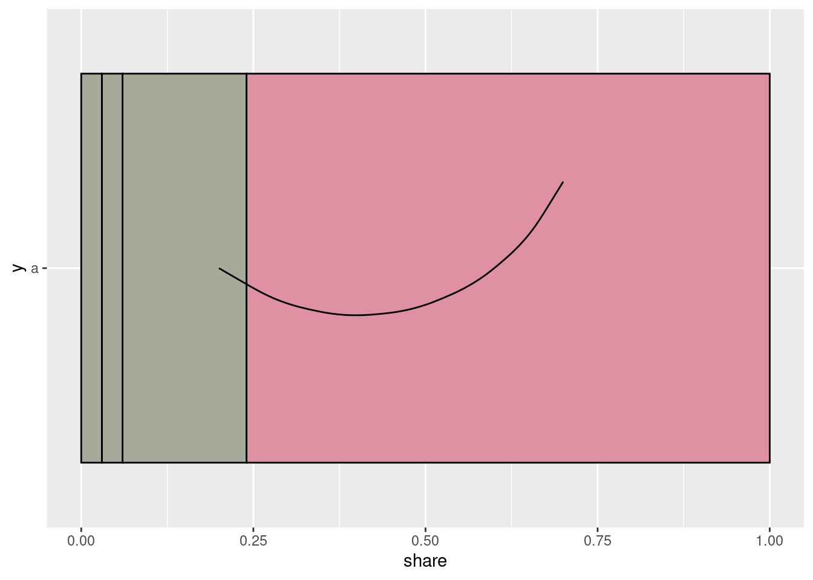
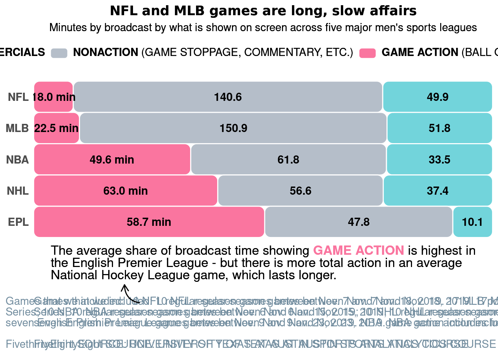

Chapter 6 GGPLOT
library(ggplot2)6.1 Internals
The data
## names count share label color
## v1 v1 55 0.76 76 % #df91a3
## v2 v2 13 0.18 18 % #A5AA99
## v3 v3 2 0.03 <NA> #A5AA99
## v4 v4 2 0.03 <NA> #A5AA996.1.1 Inspecting a Horizontal Stacked Bar Chart
pl_works = ggplot(df) +
geom_col(
aes(x = share,
y = "a",
group = names),
color = "black",
fill = df$color,
position = ggplot2::position_fill()
)
pl_not_works = ggplot(df) +
geom_col(
aes(x = share,
y = 1,
group = names),
color = "black",
fill = df$color,
position = ggplot2::position_fill()
) 6.1.1.0.1 The Computed Data
The ggplot function
ggplot2::layer_data( <plot-object> )gives you back the data that is used to draw the objectsSimilarly the
ggplot2::ggplot_build( <plot-object> )gives you back a list with the elementsdata(again),layoutand the actual plot already!As the
ggplot_build()-function is a method (like print is), it could (in theory be used for other objects too). So you can inspect it with
ggplot2:::ggplot_build.ggplot## function (plot)
## {
## plot <- plot_clone(plot)
## if (length(plot$layers) == 0) {
## plot <- plot + geom_blank()
## }
## layers <- plot$layers
## layer_data <- lapply(layers, function(y) y$layer_data(plot$data))
## scales <- plot$scales
## by_layer <- function(f) {
## out <- vector("list", length(data))
## for (i in seq_along(data)) {
## out[[i]] <- f(l = layers[[i]], d = data[[i]])
## }
## out
## }
## data <- layer_data
## data <- by_layer(function(l, d) l$setup_layer(d, plot))
## layout <- create_layout(plot$facet, plot$coordinates)
## data <- layout$setup(data, plot$data, plot$plot_env)
## data <- by_layer(function(l, d) l$compute_aesthetics(d, plot))
## data <- lapply(data, scales_transform_df, scales = scales)
## scale_x <- function() scales$get_scales("x")
## scale_y <- function() scales$get_scales("y")
## layout$train_position(data, scale_x(), scale_y())
## data <- layout$map_position(data)
## data <- by_layer(function(l, d) l$compute_statistic(d, layout))
## data <- by_layer(function(l, d) l$map_statistic(d, plot))
## scales_add_missing(plot, c("x", "y"), plot$plot_env)
## data <- by_layer(function(l, d) l$compute_geom_1(d))
## data <- by_layer(function(l, d) l$compute_position(d, layout))
## layout$reset_scales()
## layout$train_position(data, scale_x(), scale_y())
## layout$setup_panel_params()
## data <- layout$map_position(data)
## npscales <- scales$non_position_scales()
## if (npscales$n() > 0) {
## lapply(data, scales_train_df, scales = npscales)
## data <- lapply(data, scales_map_df, scales = npscales)
## }
## data <- by_layer(function(l, d) l$compute_geom_2(d))
## data <- by_layer(function(l, d) l$finish_statistics(d))
## data <- layout$finish_data(data)
## plot$labels$alt <- get_alt_text(plot)
## structure(list(data = data, layout = layout, plot = plot),
## class = "ggplot_built")
## }
## <bytecode: 0x559a8094f150>
## <environment: namespace:ggplot2>ld_works = layer_data(pl_works) %>% mutate(works = "y") %>% as_tibble()
ld_not_works = layer_data(pl_not_works) %>% mutate(works = "n") %>% as_tibble()curve_df = data.frame(
x = .2,
y = 1,
xend = .7,
yend = 1.2
)
pl_works +
geom_curve(data = curve_df,
aes(
x = x,
y = y,
xend = xend,
yend = yend
))
6.2 Examples
6.2.1 1: Stacked Horizontal Chicklets
- From here
# load libraries
# devtools::install_github("tidyverse/ggplot2")
library(ggplot2)
library(ggchicklet)
library(ggtext)
library(dplyr)
library(forcats)
library(grid)
# import data
dat <- dat <- data.frame(
Sport = c("NFL", "NFL", "NFL", "MLB", "MLB", "MLB", "NBA", "NBA",
"NBA", "NHL", "NHL", "NHL", "EPL", "EPL", "EPL"),
Type = c("Game Action", "Nonaction", "Commercials", "Game Action",
"Nonaction", "Commercials", "Game Action", "Nonaction", "Commercials",
"Game Action", "Nonaction", "Commercials", "Game Action", "Nonaction",
"Commercials"),
Time = c(18, 140.6, 49.9, 22.5, 150.9, 51.8, 49.6, 61.8,
33.5, 63, 56.6, 37.4, 58.7, 47.8, 10.1),
stringsAsFactors = FALSE)
# refactor levels
dat <- dat %>% group_by(Sport) %>% mutate(Percent = Time/sum(Time)) %>% ungroup() %>%
mutate(Sport = fct_relevel(
Sport,
rev(c("NFL", "MLB", "NBA", "NHL", "EPL")))
) %>%
mutate(Type = fct_relevel(
Type,
c("Commercials","Nonaction","Game Action"))
)
# keep trailing zeroes and add "min" to first bar value labels
dat$Label <- as.character(sprintf("%.1f", dat$Time))
dat$Label <- ifelse(dat$Type == "Game Action", paste0(dat$Label, " min"), dat$Label)
# generate plot
gg <- ggplot(dat, aes(Sport, Percent, fill = Type, label = Label)) +
geom_chicklet(
width = 1,
radius = unit(6, units = "pt"),
position = ggplot2::position_stack(reverse = FALSE)
) +
geom_text(size = 4,
fontface = "bold",
position = position_stack(vjust = 0.5)) +
scale_y_continuous(limits = c(0, 1), expand = c(0, 0)) +
coord_flip() +
theme_minimal() +
theme(
legend.position = "top",
plot.title = element_markdown(hjust = 0.5, family = "Raleway"),
plot.subtitle = element_markdown(hjust = 0.5),
plot.caption = element_markdown(
hjust = 0,
size = 11,
margin = unit(c(0, 0, 0, 0), "cm"),
color = "#718c9e"
),
legend.text = element_markdown(size = 11),
axis.text = element_text(face = "bold", size = 11),
axis.text.x = element_blank(),
axis.title.y = element_markdown(
hjust = 0,
size = 20,
margin = unit(c(0, 0, 0, 0), "cm"),
color = "#718c9e"
),
panel.grid = element_blank(),
axis.title.x = element_markdown(
halign = 0,
margin = margin(2, 0, 15, 0),
fill = "transparent"
)
) +
scale_fill_manual(
name = NULL,
values = c(
`Game Action` = "#FA759F",
Nonaction = "#B5BEC9",
Commercials = "#72D4DB"
),
labels = c(
# `Game Action` = "<strong style='color:#FA759F'>GAME ACTION</strong> (BALL OR PUCK IN PLAY)",
# Nonaction = "<strong style='color:#B5BEC9'>NONACTION</strong> (GAME STOPPAGE, COMMENTARY, ETC.)",
# Commercials = "<strong style='color:#72D4DB'>COMMERCIALS</strong>")
`Game Action` = "<strong>GAME ACTION</strong> (BALL OR PUCK IN PLAY)",
Nonaction = "<strong>NONACTION</strong> (GAME STOPPAGE, COMMENTARY, ETC.)",
Commercials = "<strong>COMMERCIALS</strong>"
),
guide = guide_legend(reverse = TRUE)
) +
labs(
y = "<span style='font-size:13pt;'>The average share of broadcast time showing <strong style='color:#FA759F'>GAME ACTION</strong> is highest in<br>the English Premier League - but there is more total action in an average<br>National Hockey League game, which lasts longer.</span>",
x = NULL,
fill = NULL,
title = "<b>NFL and MLB games are long, slow affairs</b>",
subtitle = "Minutes by broadcast by what is shown on screen across five major men's sports leagues",
caption = "Games that we included: 10 NFL regular-season games between Nov. 7 amd Nov. 18, 2019. 17 MLB postseason games, including all the games in the 2019
ACLS, NLCS, and World<br>Series; 10 NBA regular-season games between Nov. 6 and Nov. 15, 2019; 10 NHL regular-season games between Nov. 5 and Nov. 19, 2019, including three overtime games;
and<br>seven English Premier League games between Nov. 9 and Nov. 23, 2019. NBA game action includes free throws, so the action time exceeds the game time.<br>
<br>
FivethirtyEight SOURCE: UNIVERSITY OF TEXAS AT AUSTIN SPORTS ANALYTICS COURSE"
)
gg
alignTitles <- function(ggplot, title = NULL, subtitle = NULL, caption = NULL) {
# grab the saved ggplot2 object
g <- ggplotGrob(ggplot)
# find the object which provides the plot information for the title, subtitle, and caption
if(!is.null(title)) {
g$layout[which(g$layout$name == "title"),]$l <- title
}
if(!is.null(subtitle)) {
g$layout[which(g$layout$name == "subtitle"),]$l <- subtitle
}
if(!is.null(caption)) {
g$layout[which(g$layout$name == "caption"),]$l <- caption
}
g
}
# align caption to y axis value labels
gg2 <- alignTitles(gg, caption = 2)
grid.draw(gg2)
# add arrow
x <- rev(c(0.25, 0.25, 0.28, 0.28))
y <- rev(c(0.2, 0.15, 0.15, 0.15))
grid.bezier(x, y, gp=gpar(lwd=1.5, fill="black"),
arrow=arrow(type="open",length = unit(0.1, "inches")))